WebScene集成three.js扩展三维功能开发
三维功能扩展
扩展1：创建一个长方体，然后设置贴图
1.1：纯粹的three.js程序创建一个简单的长方体
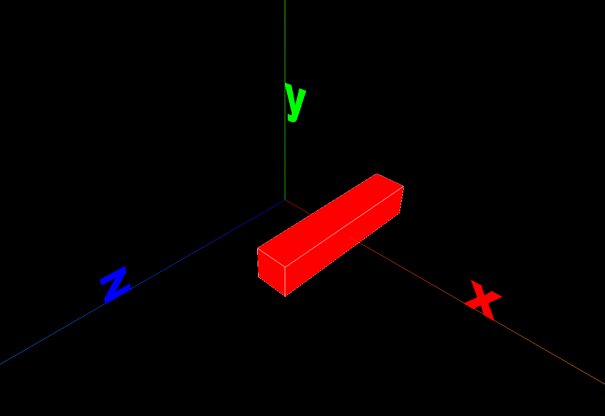
1.2：将three.js程序迁移到WebScene中
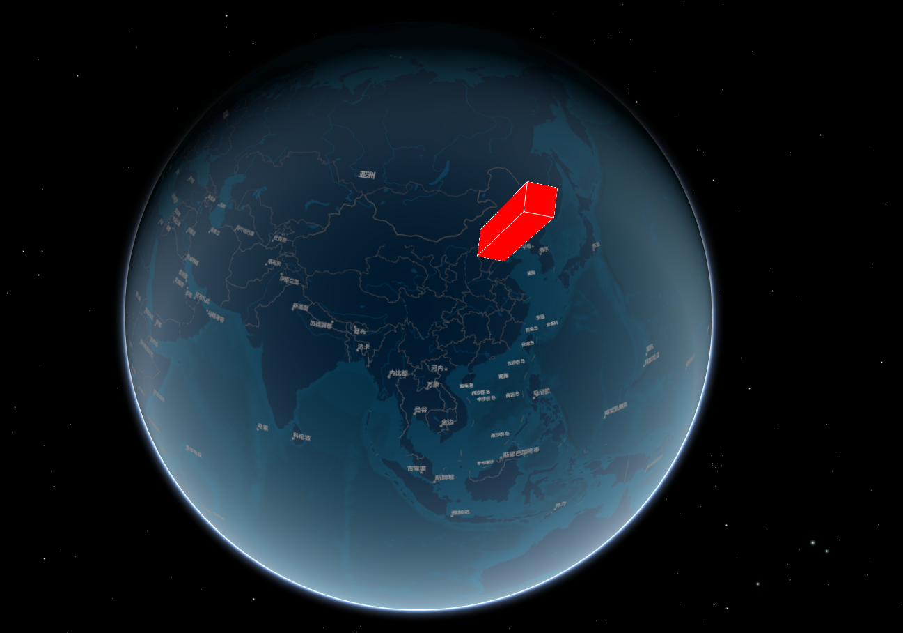
1.3：更新three.js程序，为长方体设置贴图
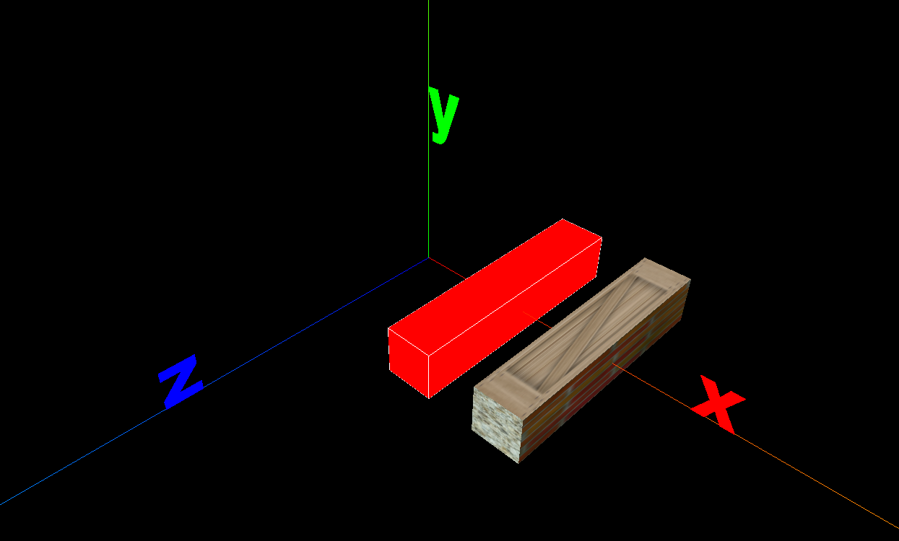
1.4：更新externalRenderers中的程序
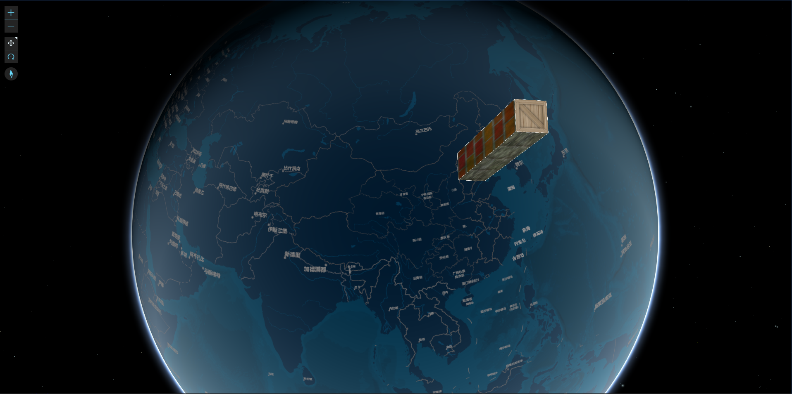
扩展2：加载一个obj模型，并平滑运动
2.1：纯粹的three.js程序加载一个obj模型，并平滑运动
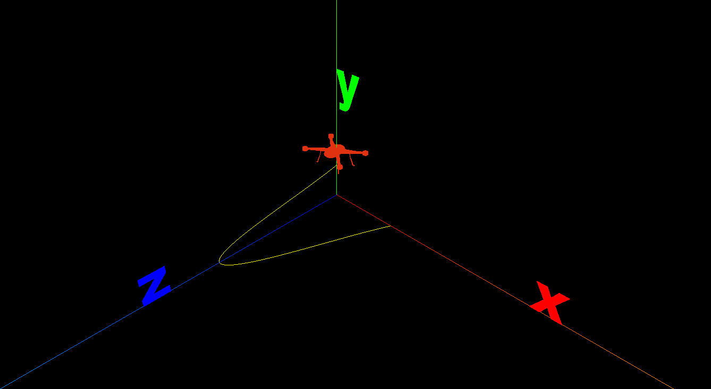
2.2：将three.js程序迁移到WebScene中
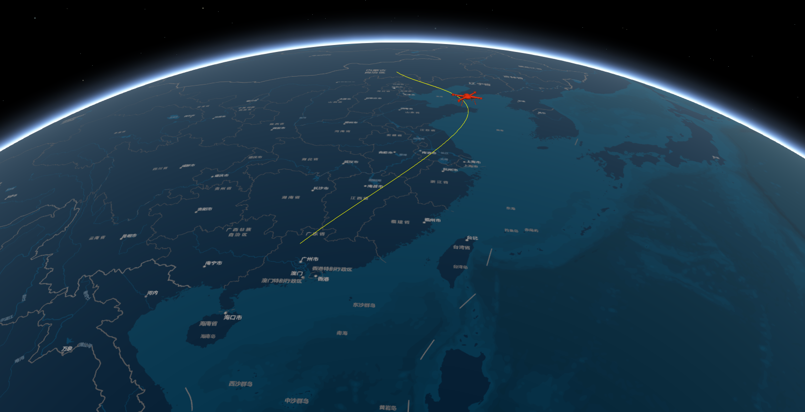
扩展3：创建圆柱体，然后动态平滑升起。
3.1：纯粹的three.js程序创建圆柱体，然后动态平滑升起
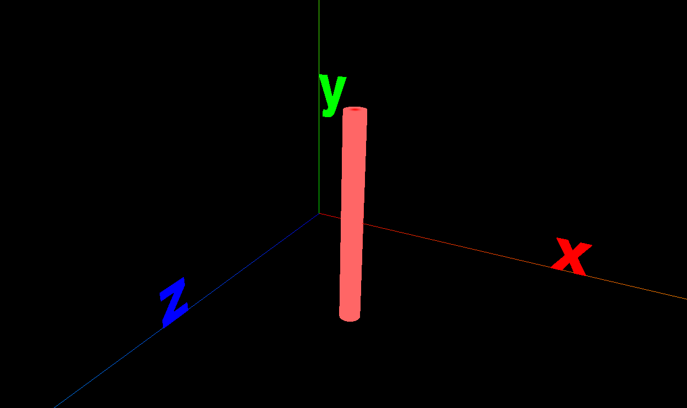
3.2：将three.js程序迁移到WebScene中
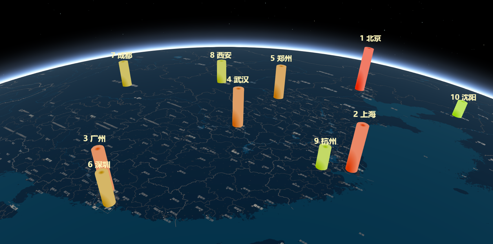
扩展4：模拟三维饼图
4.0：思路
4.1：纯粹的three.js程序绘制三维饼图
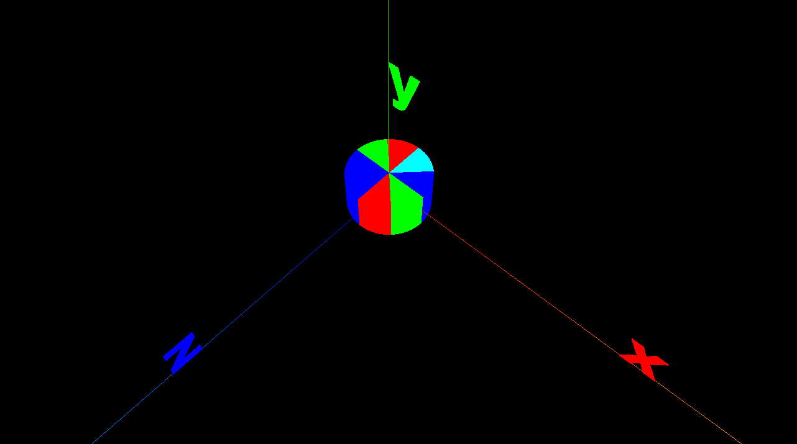
4.2：将three.js程序迁移到WebScene中
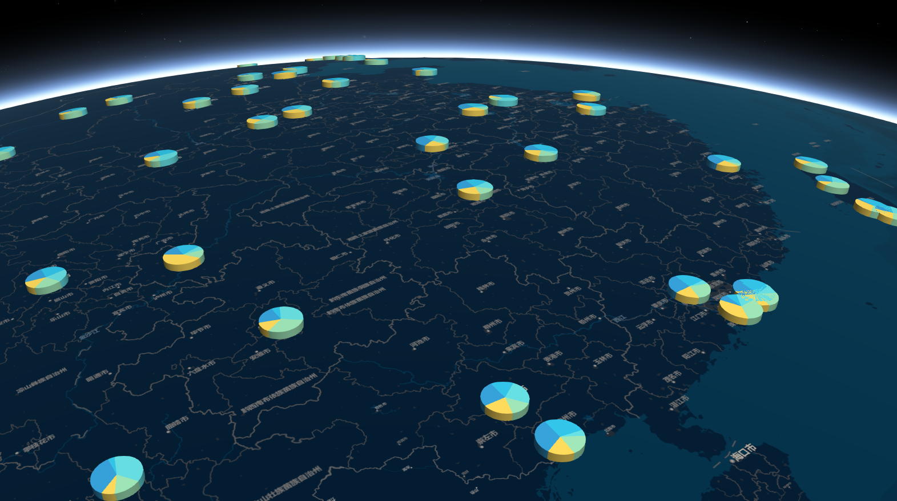
扩展5：粒子特效-飞线
5.1：纯粹的three.js程序绘制飞线粒子
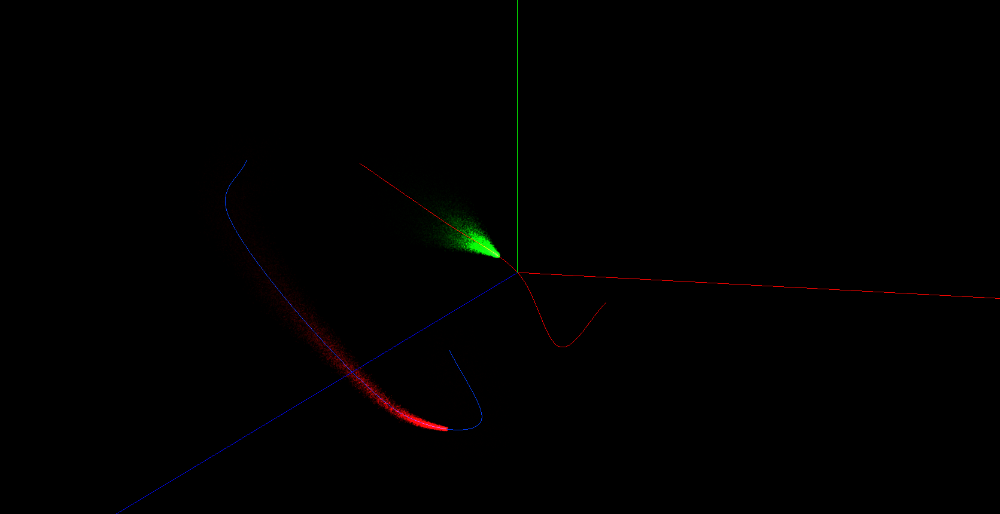
5.2：将three.js程序迁移到WebScene中